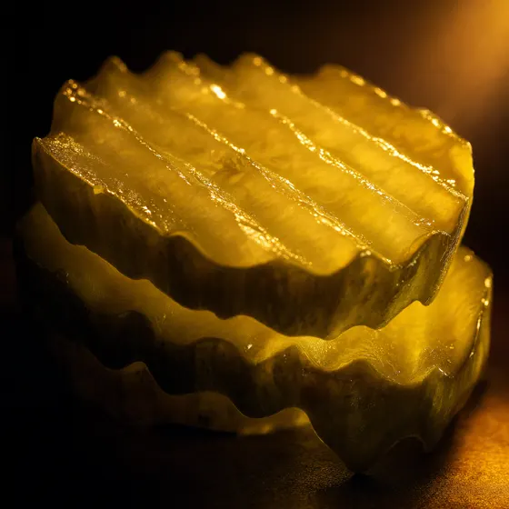
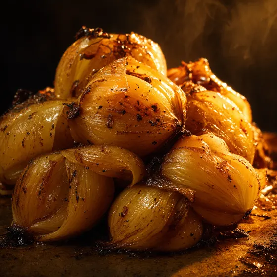
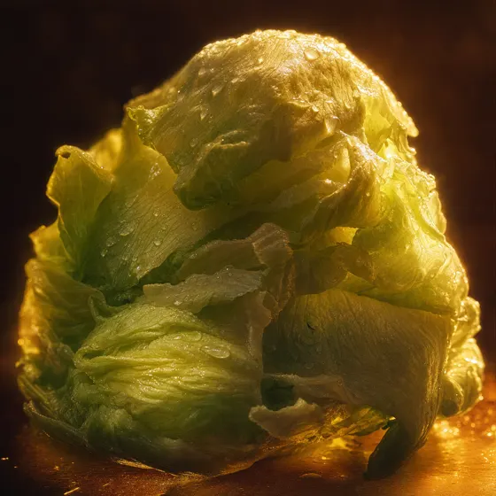
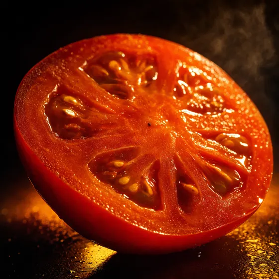

Hamburger
One 100% American beef patty, hand-leafed lettuce, tomato and spread on a freshly baked bun.
BeefLettuceSpread


Baldwin Park, California
1948. Harry Snyder opens California's first drive-thru hamburger stand at Francisquito and Garvey. Every day before dawn he picks the meat and produce himself. Esther keeps the books from the house around the corner.
Held cold until the moment it cooks
Pressed to order
"In a world where food is often over-processed, prepackaged and frozen, In-N-Out makes everything the old fashioned way."
— in-n-out.com, in a meta tag nobody reads.
One 100% American beef patty, hand-leafed lettuce, tomato and spread on a freshly baked bun.

One patty, one slice of American cheese, hand-leafed lettuce, tomato and spread.

Two 100% American beef patties, two slices of American cheese, stacked high on a freshly baked bun.
Scroll assembles it · Tap changes it · Nothing is ordered
The size of the first stand, at Francisquito and Garvey, in 1948.
Double-Double, Cheeseburger, Hamburger, Fries, Beverages, Shakes.
No freezer, no heat lamp, no microwave in any store.
It replaced the "No Delay" sign. The arrow points to pride.

100% American beef, ground fresh. Never frozen, delivered from their own patty facilities.

Old-fashioned sponge dough, baked and toasted for every order.

Real American cheese, melted on the patty the moment it leaves the flat top.

The sauce that makes it theirs. Extra spread is one of the not-so-secret orders.

Added on request. Part of Animal Style since 1961.
Cut in the store, on the spot. There is no bag between the field and the fryer.

Whole grilled onionAnimal Style
Hand-leafed lettuceTheir words
TomatoCut dailyAmericanMelted onSpreadExtra on request Well-done friesNot so secret
Well-done friesNot so secret Grilled to orderNever held
Grilled to orderNever held
A space barely one hundred square feet, at Francisquito and Garvey.

Built at night in his garage, so guests could order without leaving the car.

Every day, Harry picked the meat and produce himself at the market.

1954. The arrow replaces the "No Delay" sign. We all work under the same arrow.
We all work under the same arrow.
Unsolicited concept redesign, not affiliated with or endorsed by In-N-Out Burgers. Every figure, quotation and menu description is taken verbatim from in-n-out.com. Concept and build: Dondi Santeme, TheWebDesigner.